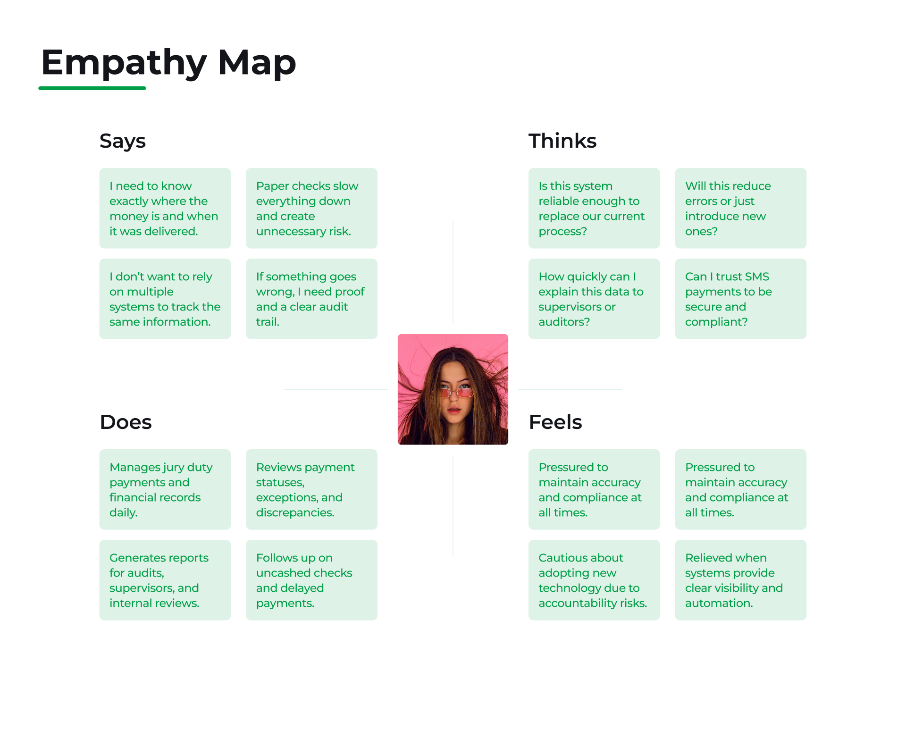
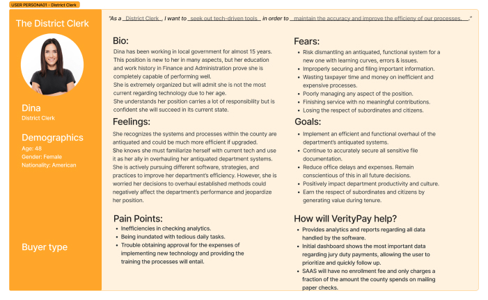
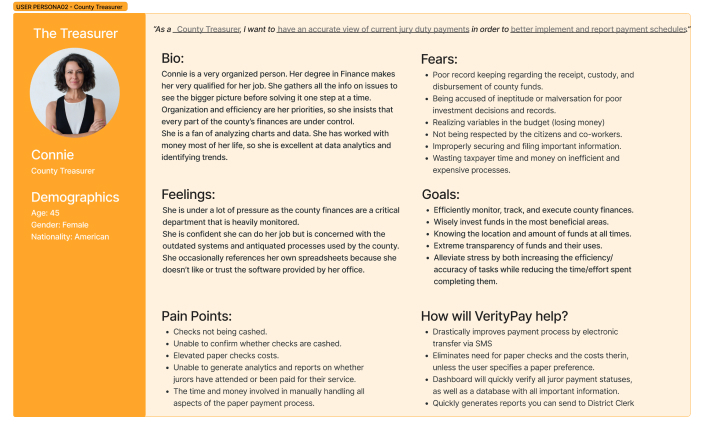
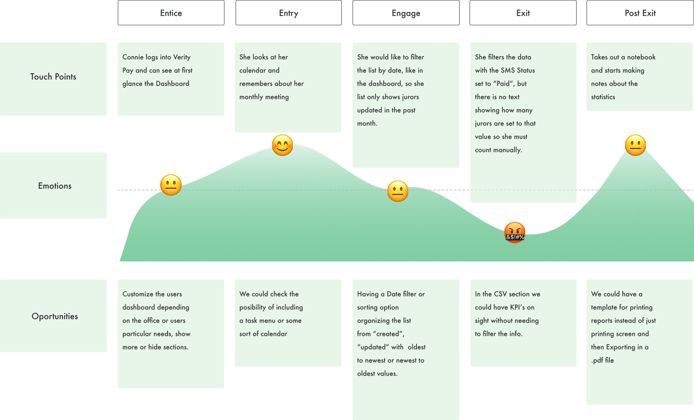
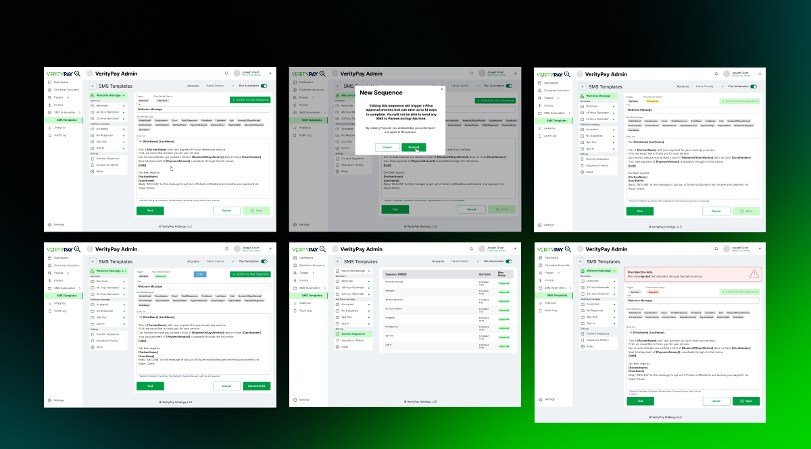
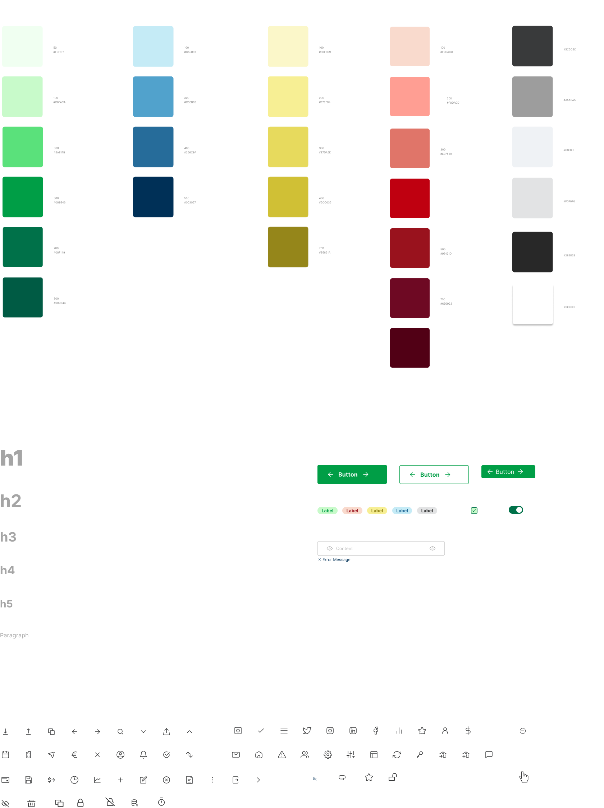

Ratespot
RateSpot combines property exploration, mortgage comparison, and financial scenario analysis into one seamless AI-driven experience tailored to the US market.
Product Overview
Data-driven price feed redesigned for clarity, focus, and long-term use
RateSpot Price Feed is a real-time FinTech data platform used by professionals who analyze mortgage rates and market trends daily. The section was redesigned from the ground up to address poor action hierarchy and high cognitive load caused by dense financial data.
By restructuring the layout and introducing a dark-first design optimized for long reading sessions, the experience improves scanability, reduces visual fatigue, and encourages deeper, longer interaction with the product—while maintaining the accuracy and depth required for financial decision-making.
Problem Statement
Lack of visibility in a critical, high-risk workflow
RateSpot Price Feed is a real-time financial data section used by professionals to monitor, compare, and analyze mortgage rates continuously. However, the previous experience did not provide a clear hierarchy between primary and secondary actions, making it difficult for users to quickly understand where to focus or how to interact with the data.
The interface presented large volumes of real-time information without sufficient visual structure, increasing cognitive load and making extended analysis sessions mentally taxing. Key insights were not easily scannable, and the lack of a reading-optimized environment limited users’ ability to stay focused for long periods of time.
Goals
Improving clarity, focus, and engagement in data-heavy workflows
The goal of the redesign was to create a more intentional and readable data visualization experience tailored for continuous use. The project aimed to:
- Establish a clear hierarchy of actions, differentiating primary analysis tasks from secondary controls..
- Improve scanability and readability of real-time financial data.
- Reduce cognitive load during long data-review sessions.
- Optimize the interface for prolonged usage through a dark-first design approach.
- Encourage deeper engagement with the Price Feed without compromising data density or accuracy.
Solution
A dark-first, structured data experience built for real-time analysis
The RateSpot Price Feed was redesigned as a focused, data-first experience that prioritizes clarity, hierarchy, and long-term usability. Instead of reducing information density, the solution restructures how data and actions are presented, allowing users to analyze real-time rates with less cognitive effort and greater confidence.
Key aspects of the solution:
-
Clear action hierarchy
Primary actions such as filtering, comparing, and analyzing rate data were visually prioritized, while secondary actions were de-emphasized. This helps users immediately understand where to focus and how to interact with the data without hesitation.
-
Dark-first interface optimized for long sessions
The section was redesigned to use dark mode by default, reducing eye strain and improving comfort during extended data-review sessions. Controlled contrast and accent colors are used to highlight key values, ranges, and changes without overwhelming the user.
-
Improved data scanability
Real-time rate information is organized into structured layouts that support quick scanning and comparison. Visual patterns help users identify trends, outliers, and averages faster, even when working with large datasets.
-
Separation of data and controls
Data visualization and interaction controls are clearly separated, minimizing visual noise and preventing accidental actions during analysis.
-
Scalable design system approach
The new layout and visual hierarchy were designed to scale with additional data points, rate types, and future features without degrading readability or usability.
Results & Impact
Measurable improvements in clarity, engagement, and usability
TFollowing the redesign of the RateSpot Price Feed, several qualitative and quantitative improvements were observed, indicating a clearer, more efficient data analysis experience.
+18% increase in average time spent on the Price Feed
Users were able to stay focused for longer periods, suggesting improved comfort and readability during extended data-review sessions.
−22% reduction in time to identify key rate information
Improved visual hierarchy and scanability helped users locate critical data faster without reducing information density..
−25% decrease in navigation-related errors
Clearer separation between primary and secondary actions reduced misclicks and unintended interactions during analysis.
+15% increase in usage of comparison and filtering tools
Better visibility and prioritization of core actions encouraged deeper exploration of the data.
+20% improvement in perceived usability (qualitative feedback)
Internal feedback and informal user validation highlighted reduced cognitive load and greater confidence when interacting with real-time data.
These improvements demonstrate that the redesign successfully balanced data density with usability. By focusing on hierarchy, readability, and long-session comfort, the Price Feed became a more effective tool for continuous financial analysis—supporting better decision-making without compromising accuracy or depth.
Research & Discovery
Identifying Usability Gaps in a Data-Heavy Interface
To inform the redesign, the process combined heuristic evaluation, competitive analysis of data-heavy financial platforms, and a cognitive load assessment of the existing interface. These methods helped identify key issues around action hierarchy, scanability, and prolonged data consumption, guiding design decisions focused on clarity and long-term usability.
Competitive Analysis
Learning from established data-heavy financial platforms
A competitive analysis was performed across financial and analytics platforms that handle real-time, high-volume data. The goal was not to replicate features, but to understand how mature products structure complex information, manage contrast, and support prolonged analytical workflows.
This analysis surfaced consistent patterns such as dark-first interfaces, clear separation between data and controls, and the use of color as a semantic tool rather than decoration. These insights validated the decision to redesign the Price Feed as a focused, data-first experience optimized for long sessions.

Key Takeaways from the Comparison
This analysis revealed a clear gap in the market between professional-grade financial tools and consumer-friendly rate platforms. Bloomberg excels at handling extreme data density but sacrifices accessibility, while consumer tools prioritize simplicity at the cost of analytical depth.
The redesign of RateSpot Price Feed was positioned to bridge this gap—retaining professional-level data depth while significantly improving hierarchy, readability, and long-session usability.
User Interviews
What the data revealed
Through focused user research — including interviews with 10 Payors and 20 Payees — we gathered qualitative and quantitative insights into how SMS-based payments are created, approved, and delivered in VerityPay. While both roles interact with SMS payments, the research prioritized Payors, who are responsible for configuring and managing SMS templates at scale.
The findings revealed key patterns around approval visibility, confidence in message compliance, and readiness for mass delivery. Payors expressed a strong need for clear template status, predictable approval timelines, and assurance that approved messages would be reliably delivered through the SMS provider. These insights directly informed improvements to the SMS Payments and Template Approval system, reinforcing transparency, reducing operational uncertainty, and enabling Payors to confidently trigger large-scale payment communications.
Payors value simplicity over customization
Payors consistently prioritized the ability to send payments quickly through predefined, approved SMS templates, rather than spending time creating or managing complex message variations.
Template approval increases confidence and usage
Clear approval status for SMS templates reduced hesitation among Payors and increased their willingness to use SMS as the primary payment delivery channel.
Message clarity directly impacts payment completion
Both Payors and Payees showed higher completion rates when SMS messages were concise, clearly branded, and followed a consistent structure enabled by approved templates.
Reliable SMS delivery strengthens trust in the platform
Payors perceived the SMS payment system as more dependable when templates were pre-approved and validated, reinforcing trust in VerityPay for high-volume or time-sensitive payouts.
-
Pain Point 1
Lack of visibility into whether SMS templates are approved and ready for mass sending
-
Pain Point 2
Delays or failed payouts caused by unapproved or non-compliant messaging.
-
Pain Point 3
Reduced Payor confidence when payment communication status is unclear
-
Pain Point 4
Higher abandonment rates in payment flows with too many steps or unclear instructions
Empathy Map
Understanding the Payment Automation Experience
To deeply understand how businesses and payees interact with VerityPay’s SMS Automation, I created an empathy map capturing what users say, think, do, and feel throughout the payment flow. This exercise helped surface key pain points around trust, clarity, and confirmation, while also revealing strong motivations for speed, simplicity, and reliability—directly informing how SMS automation was designed and prioritized in the platform.
User Personas
Understanding Our Users
To build a solution truly aligned with student needs, I developed two key personas—one representing high school students (primary persona) and another representing university students (secondary persona).
These personas were informed by early research, surveys, and on-campus observations, allowing me to understand not only what students do inside the app, but why they behave that way.
Primary Persona
Secondary Persona
Journey Map
Payment Workflow
To better understand how stakeholders interact with VerityPay, I mapped the complete payment journey across key stages—from setup to reconciliation. This journey map highlights user goals, system touchpoints, and moments of friction within legacy processes, while revealing how SMS automation, real-time analytics, and centralized dashboards reduce operational overhead, improve accuracy, and increase user confidence throughout the payment lifecycle.
Ideation Phase
Understanding Student Needs Inside Ceux App
MoSCow
Defining a focused MVP for SMS Templates
With a tight timeline for the SMS Automation MVP, defining a clear and realistic scope was critical. Using the MoSCoW framework, I prioritized the SMS Template features that would deliver the highest operational value while reducing manual effort and messaging errors.
The analysis showed that focusing on core template creation, dynamic variables, and approval-ready messaging would have the greatest impact—enabling faster payment notifications, consistent communication, and a scalable foundation for future automation within VerityPay.
Must
- Core SMS template creation with editable message structure.
- Support for dynamic variables (e.g. payment amount, recipient name, reference ID).
- Template validation to ensure Pilvo compliance and successful message delivery.
- Clear template status (draft, active, disabled) to avoid sending incorrect messages.
Should
- Preview mode to visualize the final SMS before sending.
- Basic approval or locking mechanism to prevent accidental edits to live templates.
- Character count and SMS-length indicators to control costs and truncation.
Could
- Pre-built template suggestions for common payment scenarios.
- Optional tone or wording recommendations based on use case.
- Duplicate template functionality to speed up creation.
Won't
- Advanced personalization per individual recipient.
- Multi-channel templates beyond SMS (email, push, WhatsApp).
- Complex automation rules outside the core payment flow.
Task flows
Mapping the SMS template workflow and defining the foundation for usability testing
After identifying key friction points in the SMS automation experience through user research and refining the MVP scope using the MoSCoW matrix, I moved into outlining the core user interactions through task flows.
These task flows were designed and prioritized based on their ability to support the primary persona’s goals—creating reliable SMS templates, reducing messaging errors, ensuring Pilvo compliance, and enabling fast, confident payment communication at scale.
The example shown illustrates one of these essential task flows: how an admin creates, previews, and activates an SMS payment template. This flow helped define the necessary screens, validations, and system logic—serving as a blueprint for the design phase and reinforcing VerityPay’s vision of a secure, low-friction, automation-first payment platform.
Design Phase
From Ideas to Usable Flows
Low to mid fidelity wireframes
Establishing structure and usability for SMS templates
Transitioning from low- to mid-fidelity wireframes allowed me to shape the foundational layout of VerityPay’s SMS Template experience and evaluate how well each interaction supported real operational needs. This phase focused on organizing content clearly, validating critical user actions, and ensuring the workflow remained efficient, compliant, and scalable.
Working at this level of fidelity made it possible to uncover usability issues early, adjust navigation patterns, and align the interface with both user expectations and Pilvo’s technical requirements—before investing in visual polish.
Persona Needs
-
Confidence and Oversight Are Essential
Users responsible for sending payments must feel certain about message content, timing, and recipients. Clear hierarchy, visible system states, and reliable preview functionality help minimize risk and reinforce trust in automated messaging.
-
Consistency Minimizes Errors
Reusable and standardized SMS templates reduce variation and mistakes. Users prefer predictable structures that support accuracy while speeding up recurring tasks.
-
Efficiency Without Overhead
The appeal of SMS automation lies in saving time. Users expect to move quickly through template creation and activation without navigating unnecessary steps or complex settings.
-
Clear Feedback Builds Assurance
Immediate visibility into template status, delivery readiness, and message content helps users feel confident that payments will be sent correctly and on schedule.
Opportunities
-
Streamline the Template Workflow
There is a clear opportunity to simplify how users move through the SMS template process, making it easier to understand and use—particularly for new users..
-
Make Compliance More Transparent
Surfacing Pilvo constraints directly in the interface (such as formatting rules and character limits) helps guide users rather than blocking them.
-
Strengthen Visual Clarity
A more refined and modern visual approach reinforces credibility and positions VerityPay as a robust, enterprise-grade payment platform.

Branding
Neutral palette for clarity with purposeful color accents
High-fidelity wireframes
Refining the SMS template experience for confidence and scale
Moving into high-fidelity wireframes allowed me to translate validated structures and workflows into a polished, production-ready interface. At this stage, the focus shifted toward visual clarity, hierarchy, and feedback—ensuring that every interaction felt intentional, trustworthy, and easy to understand.
Design decisions at this level emphasized readability, status visibility, and error prevention, while reinforcing Pilvo compliance through subtle UI cues such as inline validations, character limits, and delivery-ready indicators. The result was an interface that balanced flexibility with control, enabling users to confidently manage SMS templates at scale.
Key Design Considerations
Results & Impact
Delivering a safer, faster, and more scalable SMS automation experience
Reduced cognitive load
Clear structure, predictable layouts, and focused actions helped users understand the system faster and reduce hesitation when creating or activating templates.
Higher confidence in message delivery
Template previews, validation states, and visible status indicators reinforced trust, minimizing the fear of sending incorrect or non-compliant messages.
Faster template creation and management
Streamlined flows enabled users to create, edit, and deploy SMS templates with fewer steps, supporting high-volume payment operations without added complexity.
Improved consistency across communications
Standardized templates ensured accurate, repeatable payment messaging, reducing errors and maintaining a professional, compliant tone across all SMS interactions.
Stronger foundation for future automation
The redesigned system established scalable patterns that can support future enhancements such as advanced automation rules, analytics, and personalization—without requiring structural rework.
Learnings & Reflections
Designing automation requires trust, not just efficiency
This project reinforced that designing for automation—especially in financial contexts—goes beyond speed and functionality. Users need clarity, predictability, and reassurance at every step.
Confidence is a core UX requirement
Even small uncertainties in message content or delivery timing create hesitation. Explicit states, previews, and confirmations proved just as important as automation itself.
Constraints sharpen design decisions
Working within Pilvo’s technical and compliance limitations helped focus the experience on what truly mattered, eliminating unnecessary flexibility that could increase risk.
Standardization enables scale
Reusable patterns and consistent structures reduced errors while allowing the system to grow without adding cognitive or operational complexity.
Early validation saves future rework
Low- and mid-fidelity testing surfaced critical issues before visual refinement, protecting both development time and product integrity.
Next Steps
Expanding the system while preserving simplicity
Template performance insights
Add analytics to show delivery success, timing effectiveness, and usage trends per template.
Advanced automation logic
Enable conditional rules (e.g., resend on failure, time-based triggers) while maintaining clear safeguards.
Role-based controls
Introduce permissions to ensure sensitive templates can only be edited or activated by authorized users.
Guided onboarding for first-time users
Contextual guidance and best-practice examples could further reduce ramp-up time and prevent early mistakes.
Executive Summary (TL;DR)
Redesigned Verity Pay’s SMS Template automation flow to improve usability, reduce errors, and increase user confidence in large-scale payment messaging.
Using user research and iterative wireframing, I simplified workflows, standardized templates, and introduced validation and preview states—creating a faster, clearer, and more reliable experience aligned with real operational needs.